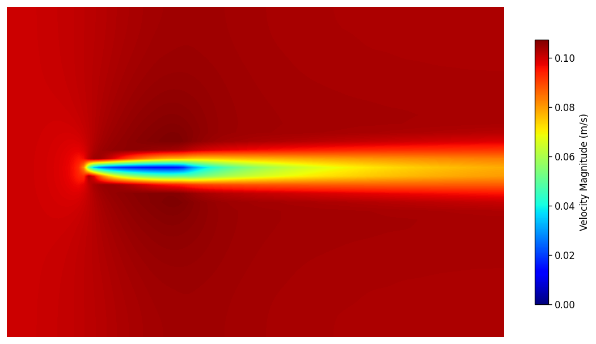
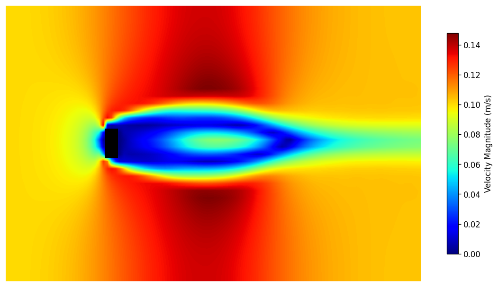
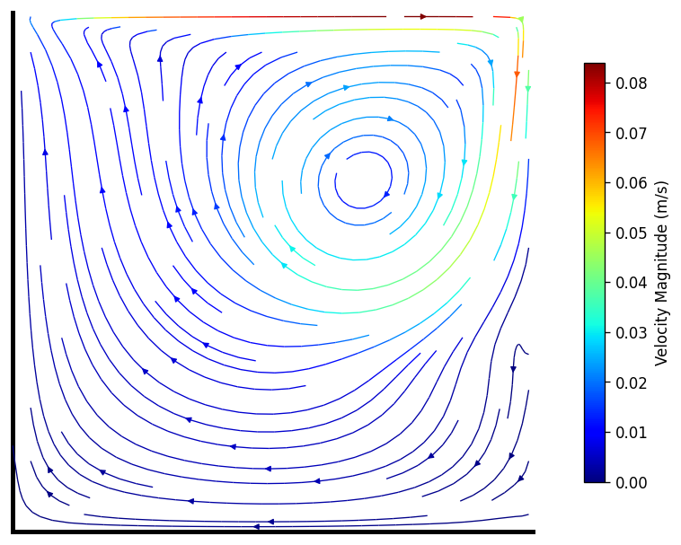
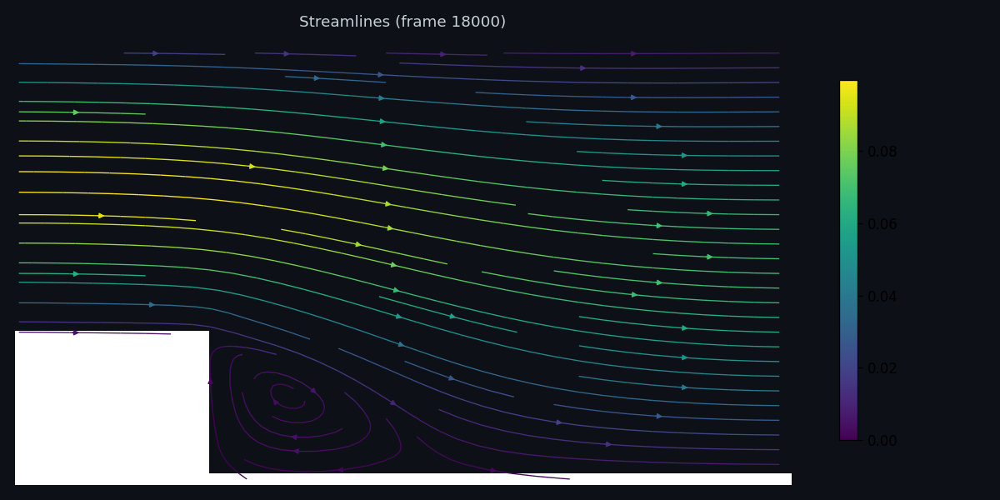
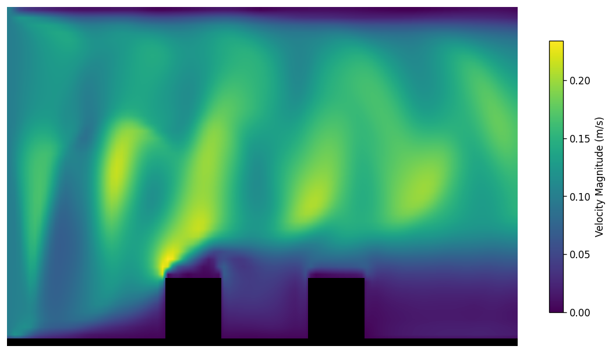
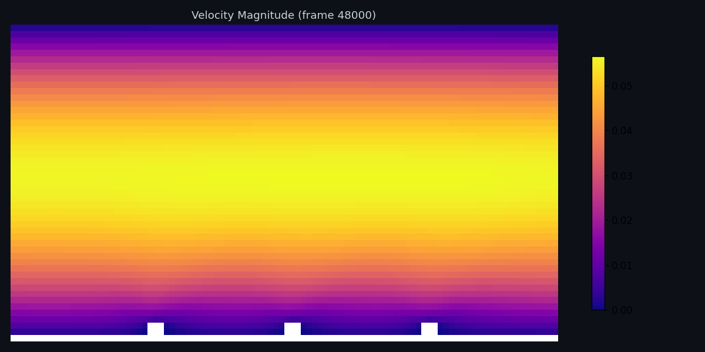
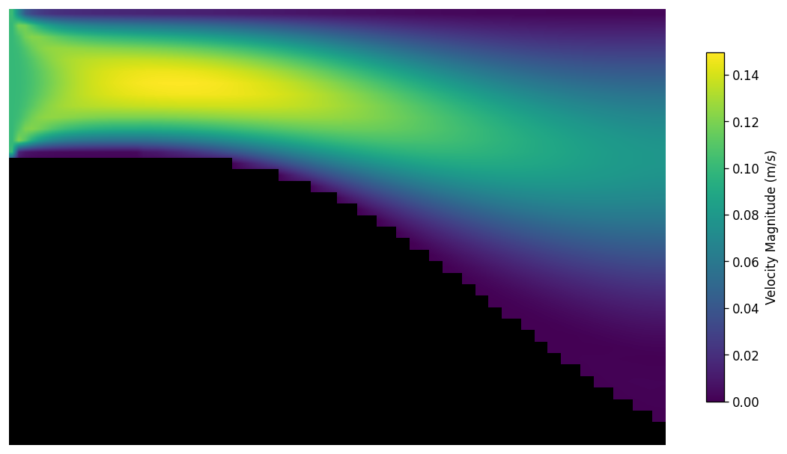
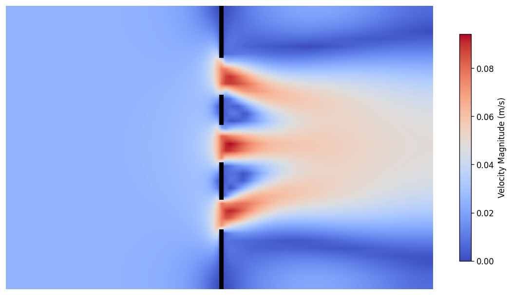

AK-Vortex: High-Performance C++ Lattice Boltzmann CFD Solver
This solver was built to explore computational fluid dynamics from the ground up. It simulates 2D airflow around buildings, through internal passages, and over wings using the Lattice Boltzmann Method, a particle-based approach to solving the Navier-Stokes equations. Everything runs in C++ with OpenMP parallelisation and outputs results as interactive visualisations.
View Source on GitHub →Why Build This?
I wanted to understand CFD at the implementation level, not just the theory. Commercial solvers like OpenFOAM and SU2 are incredible tools, but their complexity hides the physics behind layers of abstraction. Building from scratch forces you to confront every detail: how collision operators dissipate energy, how boundary conditions shape the flow, and how memory layout determines whether your code runs at 10% or 90% of peak hardware throughput.
This project is my lab notebook. Each simulation case is an experiment, each validation table is a measurement, and each bug fix is a lesson learned. The code is readable by design. I want someone else to be able to open a single header file and follow the entire algorithm from equilibrium distribution to force extraction.
Simulation Cases
There are currenty fifteen validation cases spanning external aerodynamics, internal flows, urban microclimate, and multi-body interactions. This is an ever-growing list of experiments to test the solver's limits in different scenarios.Each case includes a comparison slider, quantitative validation against experimental data, and discussion of what the results mean physically.

Flat Plate Boundary Layer
PRIMARY validation. Laminar BL vs Blasius solution. AoA sweep (-10 to 15 deg) and Re sweep (500-2000) for drag polar.
View case →
Cylinder Wake
Von Karman vortex street at Re = 20-200. Bouzidi interpolated bounce-back for smooth curved boundaries.
View case →
Square Cylinder
ERCOFTAC 043 sharp-edge separation. Fixed separation points at corners, wider wake than circular cylinder.
View case →
Lid-Driven Cavity
Classic benchmark at Re = 100, 400, 1000. Centerline velocity profiles validated against Ghia et al. 1982.
View case →
Backward-Facing Step
Flow separation and reattachment. Reattachment length Xr/H validated against Armaly et al. 1983.
View case →
Urban Canyon
Three Oke 1988 flow regimes with 3 buildings. Top-down street-level wind and building downwash effects.
View case →
Ribbed Channel
Internal cooling with rib turbulators. Friction factor and reattachment for gas turbine blade cooling.
View case →
Periodic Hills
Canonical LES benchmark (Moser/Kim/Moin 1993). Separated turbulent flow with sinusoidal hill profile.
View case →
Orifice Plate
Single and multi-stage orifice plates: one/three holes and staggered serpentine paths. Pressure drop validation for ISO 5167 flow metering.
View case →Key Features
- MRT collision operator with independently tuned moment relaxation rates, based on d'Humieres 2002
- Smagorinsky LES subgrid-scale eddy viscosity with auto-activation at high Re
- Bouzidi interpolated bounce-back for smooth curved boundaries, including arbitrary polygons
- Flat 1D memory layout for cache-friendly access patterns on modern CPUs
- OpenMP parallel collision and streaming with collapse(2)
- Momentum exchange force extraction without body-fitted meshes
- Direct JSON output with per-frame velocity and vorticity fields
- 12 Google Test unit tests with GitHub Actions CI on Ubuntu and macOS